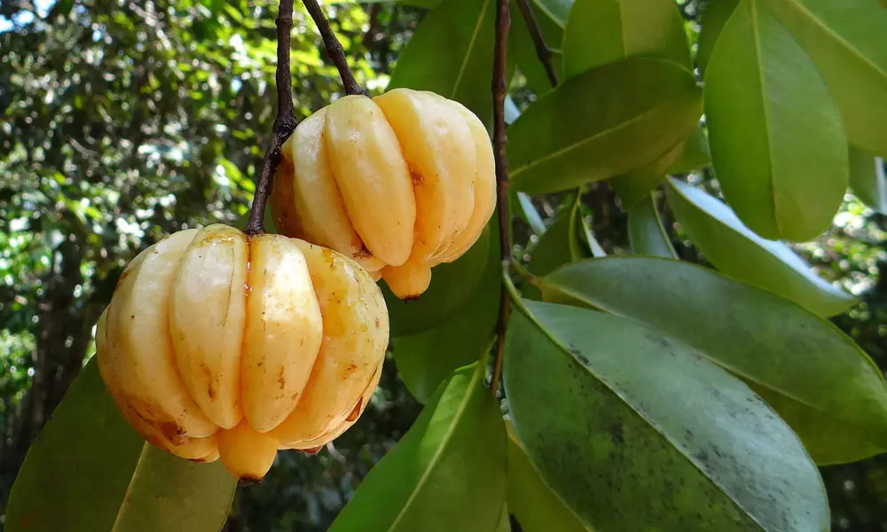

Garcinia gummigutta
Gracina Gummiguttah is an exotic fruit,Which is commonly used in the food industries.
Description: Medium sized dioecious trees. Leaves roundish-eliptic. Male flowers yellow, in axillary and lateral fascicles.
Female flowers solitary, terminal. Fruit conical, 4-5 ridged. Seeds 4-5
Distribution: Restricted endemic of Wayanad and Nilgiri hill

Health benefits of Kudampuli
Kudampuli offers numerous health benefits. It is known to have anti-inflammatory properties that help to treat gastric and bowel disorders. It is also used in Ayurvedic medicines for the treatment of stomach ulcers, intestinal worms and arthritis, and also helps in cardiovascular and digestive health. The fruit contains Hydroxycitric acid (HCA) that is believed to suppress appetite, thereby enabling weight loss.
- Kudampuli prevents the growth of harmful bacteria and parasites in your gut and improves digestion.
- HCA present in Cambodge makes you feel full and thus reduces the food intake, which in turn leads to weight loss. Studies say that Kudampuli can help you reduce up to 2kg in a month.
- Garcinia cambogia increases the fatty acid metabolism that reduces the LDL levels, cures the fatty liver problems. Kudampuli keeps your heart and liver healthy.
- Malabar Tamarind boosts your overall immune system by keeping your internal organs healthy and reduces the effect of aging
- Kudampuli is good for menopause woman as it reduces the inflammation caused by arthritis and other joint inflammation
- Cambodge is the best medicine for anyone who is recovering from alcohol addiction as it removes the toxins from the liver and the damages caused by alcohol.
- Garcinia cambogia is also good for your oral health. It cleans the bad bacteria and parasites and cures bad breath, tooth sensitivity. Keeps your teeth shiny with healthy gums.
- Kudampuli is also well known to treat the uterus problems as it reduces the growth of harmful microorganisms.
About
Kudampuli is a small or medium-sized tree with a rounded crown and horizontal or
drooping branches. Leaves are dark green and shining, elliptic obovate, 2-7 cm long,
and 2 – 4 cm broad. The fruit, which is 4 – 5cm in diameter is green in color changes to yellow or red when ripe, and resembles a small pumpkin. It has deep longitudinal grooves (6-8) and 6 to 8 seeds. Surrounded by a succulent aril.
The tree from which Cambodge is harvested has the scientific classification “Garcinia gummi-gutta” and can be found predominantly in the Southernmost parts of India ranging from Kerala to the forests of Nilgiris. Cambodge or Malabar tamarind has its culinary, industrial, and medicinal uses. The Garcinia species in itself is an important part of the forest flora of the Western Ghats. Cambodge is the most widely produced and distributed crop in the state as it is an economically important spice for Kerala. The fruits are popularly known as Malabar tamarind or kudumpuli whose dried pericarp is used as a condiment for culinary purposes. It is also used as a substitute for tamarind to impart a similar flavour to curries and masala made in South India. Buy Cambodge online or from your local grocery store and ensure it is of the highest quality possible to get the best use out of it in your household.
The fruit is about the size of a date or a plum and it is peach-orange when it is ripe. The fresh fruit can be plucked and eaten right from the tree. It has a tart-like flavour which is often incorporated into curries, stews, marinades, etc. The aroma of Malabar tamarind is complex and best described as harsh and smokey. It contributes a pleasant sourness with hints of sweetness and a slight trace of smoke. break open the fruit to see an interior dye-like structure which ranges from deep orange to fluorescent pink in colour. These are extensively sourced and used as a dye in the commercial and textile industries. There is also a high demand for its medicinal properties which is why you surely want to buy Cambodge online or offline and add it to your collection of tropical plants and spices.
{kind=link}
{kind=link}
{kind=link}
{kind=link}
{kind=link}
{kind=link}